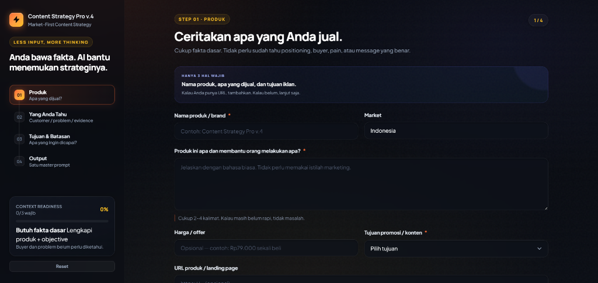

Berhenti Ngonten Tanpa Arah yang Jelas
Promo Tiap Minggu, Ngonten Tiap Hari. Tapi Kok Orderan Masih Aja Sepi?
Bukan produknya yang salah. Tapi konten Anda belum berhasil bikin calon pembeli paham kenapa mereka harus beli sekarang.
Tanpa arah: AI cuma kasih ide generik — muter di fitur, diskon, dan testimoni.
Dengan CSP: Kerangka strateginya sudah jadi ➔ Arah konten terpetakan & siap memicu orderan.
Bukan janji order instan. Ini panduan strategis agar konten Anda punya arah dan alasan beli yang kuat.
Kejadian yang Sering Berulang
Bukan Kurang Rajin. Tapi Setiap Mau Ngonten, Mulainya Tanpa Pondasi, dari Nol Lagi.
Masalahnya sering terasa kecil saat satu per satu. Tapi kalau berulang tiap hari, promosi jadi capek dan arahnya gampang berubah-ubah.
Desainnya bisa dibuat. Tapi bingung isi pesannya apa.
Akhirnya kembali ke foto produk, fitur, harga, atau promo yang sedang jalan.
Minta ide konten. Dapat banyak. Tapi terasa generik.
Idenya ada, tapi begitu jadi konten — hasilnya tetap datar. Karena yang kurang bukan ide, tapi arahnya.
Baru terasa "punya bahan" untuk promosi.
Begitu promonya habis, kembali bingung mau ngomong apa lagi tentang produk.
Konten baru lagi. Tapi pola kontennya tetap sama.
Yang berubah bentuk postingannya. Tanpa kerangka yang jelas, pesannya tetap berputar di situ-situ saja.
Cara Berpikir Sebelum Posting
Konten yang Menjual Tidak Dimulai dari Ide Konten.
Tapi dari satu pertanyaan yang mengubah seluruh arah konten Anda.
"Hari ini posting apa ya?"
"Apa yang bikin orang akhirnya bilang 'Saya butuh ini?'"
Cara Kerja
Dari "Produk Apa Adanya" Menjadi
Arah Konten yang Tajam & Siap Eksekusi.
Anda tidak perlu jadi jago marketing. Sistem ini mengubah informasi produk jadi pondasi konten yang siap dieksekusi.
Cukup jawab fakta produk yang Anda tahu
Tidak perlu riset rumit atau istilah marketing. Cukup masukkan nama produk, fungsi utama, dan siapa calon pembelinya.
Sistem memproses lewat framework strategis
Produk dibedah otomatis — menemukan alasan beli, sudut komunikasi, hingga pesan kunci yang menggugah pembeli.
Dapatkan bahan konten yang siap dieksekusi
Lengkap dengan angle, arah hook, pesan utama, hingga master prompt siap pakai untuk dipasang ke AI atau tim Anda.

Cukup masukkan fakta dasar produk yang Anda tahu — sistem yang otomatis meramu arah strategi dan susunan prompt-nya.
Bukti Lewat Perbandingan
Dua Orang. AI yang Sama.
Hasilnya Bisa Jauh Berbeda.
Bedanya bukan siapa yang lebih jago bikin prompt. Yang satu langsung minta ide. Yang satu masuk ke AI dengan arah promosi yang sudah dibedah lebih dulu.
Sambal bawang rumahan 150 ml · pedas gurih · praktis untuk lauk sehari-hari · Rp28.000.
“Buatkan ide konten untuk jualan sambal saya.”
- •5 alasan pecinta pedas wajib coba sambal ini.
- •Behind the scenes proses pembuatan sambal.
- •Promo diskon khusus minggu ini.
- •Testimoni pelanggan setelah mencoba.
- •Ide menu yang cocok dimakan dengan sambal.
Bukan cuma minta ide. AI sudah diberi konteks “apa yang mau dijual lewat kontennya”.
- 🎯 Situasi: “Lauknya cuma telur lagi?” — angkat rasa bosan sebelum menawarkan sambal.
- 🧭 Angle: Menu sederhana tidak harus terasa seadanya.
- 🎣 Hook: “Yang bikin makan telur lagi terasa beda kadang bukan lauk barunya.”
- 🎬 Demo Content: Nasi hangat + telur → tambah sambal → fokus pada momen makan, bukan daftar fitur.
- 📣 CTA: Ajak cek varian/rasa setelah relevansi produknya sudah terasa.
AI-nya bisa sama. Yang membedakan adalah arah sebelum meminta AI membuat konten.
Contoh simulasi untuk memperlihatkan perbedaan struktur input. Output AI dapat berbeda tergantung model, konteks, dan informasi produk.
Bukan Generator Ide
Bukan Sekadar “Cari Ide Konten yang Banyak”.
Karena masalahnya bukan kekurangan ide. Masalahnya: ide itu mau membawa produk Anda ke arah mana?
Anda Tidak Lagi Membuka Canva atau ChatGPT dengan Kepala Kosong.
Anda sudah punya pegangan tentang pesan, sudut, dan konteks yang ingin dibawa. Jadi AI dan tools produksi dipakai untuk mengeksekusi arah — bukan menebak arahnya dari nol.
Apa yang Anda Bawa Pulang
9 Output yang Membuat Promosi Tidak Lagi
Mulai dari Tebak-tebakan.
Satu kali bedah, lalu gunakan hasilnya sebagai bahan untuk banyak eksekusi konten berikutnya.
Siapa yang paling mungkin relevan dan situasi mereka saat bertemu produk Anda.
Masalah, keresahan, dan hasil yang sebenarnya ingin mereka dapatkan.
Momen ketika kebutuhan terhadap produk Anda terasa lebih nyata.
Pesan besar yang perlu terus diperkuat supaya promosi tidak melebar ke mana-mana.
Berbagai sudut untuk mengangkat produk tanpa mengulang cara jual yang sama.
Arah pembuka konten berdasarkan pain, gain, curiosity, atau situasi tertentu.
Rekomendasi cara membawa pesan ke monolog, demo, carousel, poster, dan format lain.
Arah distribusi dan ajakan yang lebih selaras dengan tujuan konten.
Bawa konteks yang sudah disusun ke AI untuk membantu membuat konten lebih konsisten.
Cocok Kalau Anda Punya Ini
Bukan Harus Jago Marketing. Yang Penting
Anda Punya Produk yang Ingin Dipromosikan.
📦 Produknya sudah ada.
Fisik, digital, atau jasa — selama Anda bisa menjelaskan apa yang dijual.
🧭 Pernah mencoba promosi.
Anda sudah merasakan bagaimana rasanya rutin posting tapi tetap sering kehabisan arah.
📝 Mau mengisi konteks produk dengan serius.
Semakin jelas input produk Anda, semakin berguna hasil yang bisa disusun.
Kalau yang Anda cari hanya generator caption sekali klik, produk ini mungkin bukan yang paling cocok.
Bukan Sekali Pakai Lalu Lupa
Setelah Tahu Arah Promosinya, Anda Juga Dibantu Menjaganya Tetap Konsisten.
Gunakan hasil bedah sebagai pegangan saat membuat banyak konten berikutnya.
🎯 Core Message
Supaya konten berbeda-beda, tapi pesan besarnya tetap nyambung.
📚 Angle Library
Supaya tidak kembali ke fitur, promo, diskon, dan “beli sekarang” terus-menerus.
⚡ Prompt Execution
Supaya saat membuka AI, Anda datang membawa konteks — bukan kepala kosong.
Investasi Sekali, Pakai Selamanya
Satu Pegangan Strategis untuk
Ratusan Konten Berikutnya.
Daripada tiap minggu pusing mikir "mau posting apa?", kunci arah promosi produk Anda dari sekarang.
Content Strategy Pro v.4
⚡ Sekali bayar untuk semua produk Anda. Tanpa langganan bulanan.
Semua yang Anda Dapatkan Hari Ini:
9 Output Arah Promosi Lengkap
Audience snapshot, problem-desire map, buying situations, core message, angle, hook, hingga format konten.
Framework Input Konteks ke AI
Tinggal masukkan brief ke ChatGPT, Claude, atau tim agar eksekusi konten langsung tajam & menjual.
Akses Penuh Selamanya (Lifetime)
Pakai kapan saja untuk produk lama, varian baru, atau bisnis berikutnya tanpa batas.
Masukkan kode MARKETFIRST saat checkout untuk menikmati potongan 50%.
FAQ
Pertanyaan yang Mungkin Masih Mengganjal
Ini generator caption atau ide konten? ▼
Bukan. Fokus utamanya menyusun konteks dan arah promosi terlebih dahulu. Setelah itu, hasilnya bisa dibawa ke AI untuk membantu mengeksekusi caption, script, carousel, dan format konten lain.
Harus jago marketing untuk menggunakannya? ▼
Tidak. Anda cukup memahami produk yang dijual dan mengisi konteksnya sejelas mungkin. Istilah strateginya dikerjakan oleh sistem, bukan harus Anda hafalkan.
Bisa dipakai untuk produk selain barang fisik? ▼
Bisa digunakan untuk produk fisik, produk digital, maupun jasa selama penawarannya cukup jelas untuk dibedah.
Apakah hasilnya menjamin order langsung naik? ▼
Tidak ada alat strategi yang bisa menjamin transaksi. Content Strategy Pro membantu memperbaiki arah dan bahan komunikasi; performa akhirnya tetap bergantung pada produk, offer, traffic, distribusi, kualitas eksekusi, dan faktor lain.
Kenapa tidak langsung minta AI bikin 30 ide konten? ▼
Bisa saja. Tetapi tanpa konteks yang cukup, AI cenderung memberi ide yang umum. Di sini Anda menyusun “apa yang ingin dikomunikasikan” lebih dulu, baru menggunakan AI untuk memperbanyak eksekusinya.
Produk Anda Sudah Ada
Sekarang Bantu Orang Mengerti
Kenapa Mereka Perlu Membelinya.
Jangan mulai konten berikutnya dari halaman kosong. Mulai dengan arah yang lebih jelas tentang apa yang ingin Anda sampaikan.